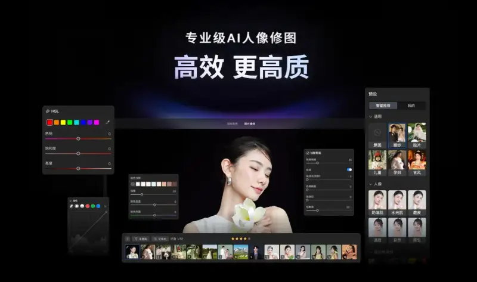
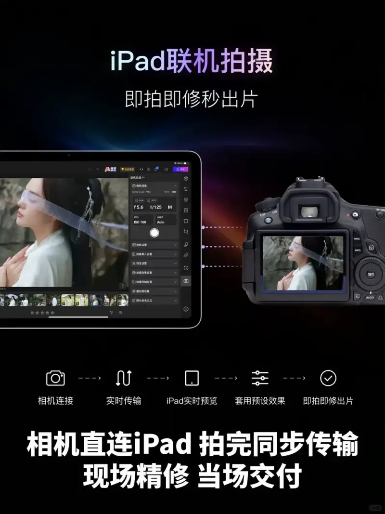
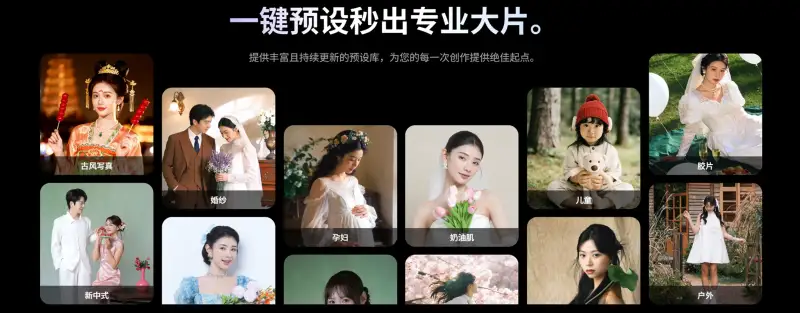
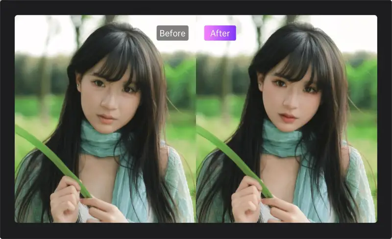
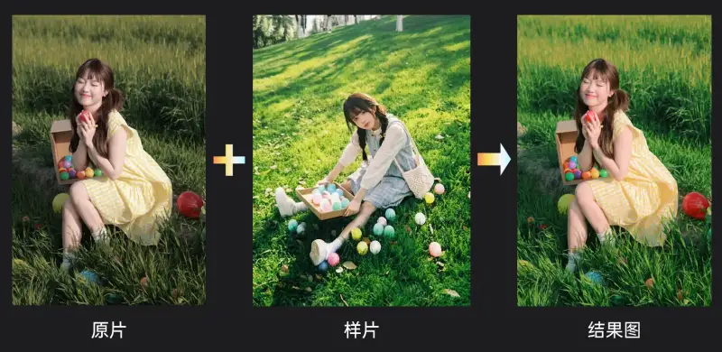
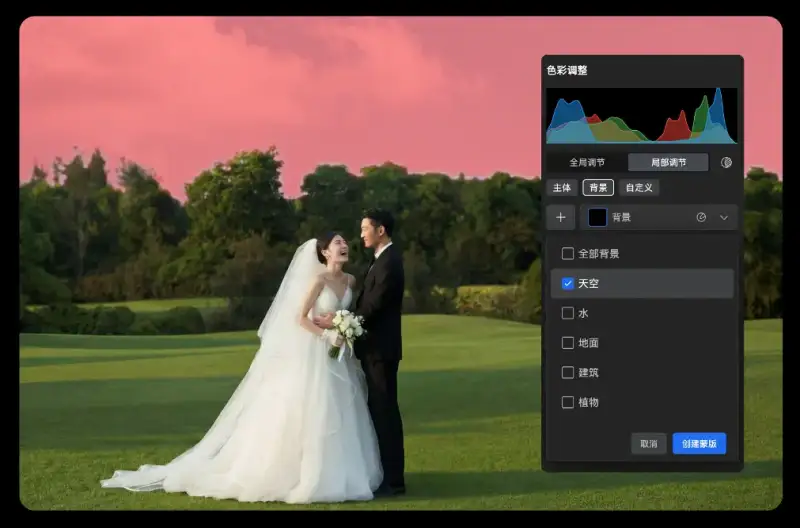
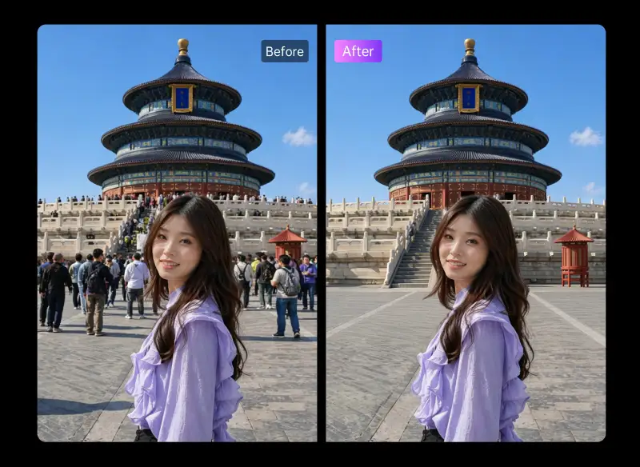
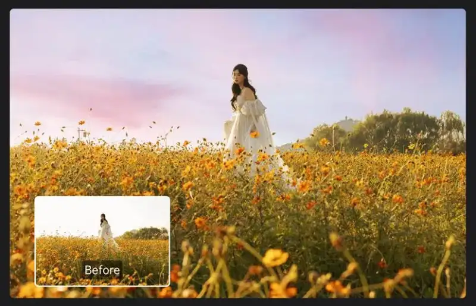
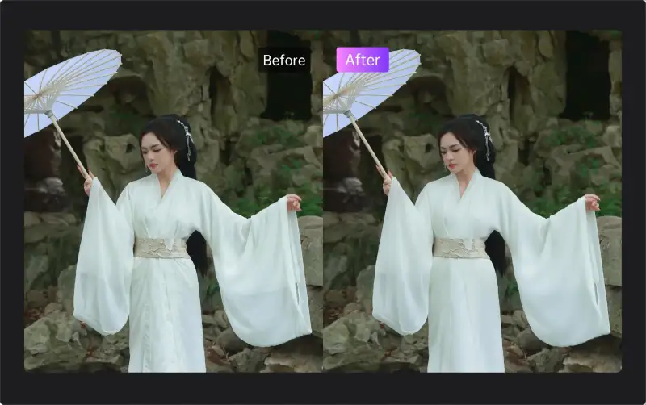

Each summer is the peak season for travel photography. Demand keeps rising for graduation trips, family outings, and wedding travel shoots, and photographers' schedules get fuller. But the real drain is not only running around on set. The later work of importing, selecting, retouching, and delivering also takes a lot of time.
At the same time, the travel shoot market is more competitive. Clients want to see finished images on site and share them fast. Photographers also want less repetitive post work, and more time for shooting and creating.
To solve these pain points, Liuguang Retouch for iPad was made. As a professional AI portrait retouching tool, it brings commercial-grade AI retouching to a portable mobile device. It gives photographers a smart workflow from shooting to delivery. It makes travel shoots faster and more flexible, so photographers can spend more time creating, and leave the tedious, repetitive retouching to Liuguang.

A mobile AIretouching workstation: shoot, retouch, and output on the spot
Today, many travel photographers carry an iPad to select and retouch images on site. But in the old way, after shooting they must pull the card, connect a reader, import photos, and wait for transfer. This is slow and complex, and the client first sees the unprocessed raw image, which hurts the first impression and the wish to buy.
For this, Liuguang Retouch for iPad joins tethered shooting, smart presets, and batch processing into one mobile AI retouching workstation for travel photographers.
With tethered shooting, the photographer connects the camera to the iPad with one cable. When they press the shutter, the photo syncs into Liuguang automatically, with no import step. It supports more than a hundred popular camera models. With a large set of smart presets, one tap applies a style, and many photos can be tuned together and exported in batch, for a fast, smooth link from shoot to delivery.

Whether it is a tropical island, a city outdoor scene, a flower-hair shoot, or a seaside wedding, the photographer can output stable images fast on site. The client previews the result while shooting, waits far less on site, chooses photos more easily, and the whole service and acceptance improve.

200+AIPortrait retouching tools for every outdoor need
Liuguang Retouch for iPad has more than 200 AI portrait tools. They cover portrait beautifying, color, background, and detail work, and give a one-stop answer to the common retouching problems in travel shoots.
On outdoor shoots, a client may be tired or off form, and the images suffer. Liuguang Retouch supports even-tone skin, oil removal, facial volume, makeup adjustment, AI face smoothing, leg lengthening, and hair smoothing, so the subject looks their best.

For color, Liuguang Retouch supports both global and local adjustment, from overall style down to fine control.
A client brings a trendy sample and asks for the same look, but time and light often make the ideal tone hard to match. AI color transfer reads the reference sample, copies the whole color style in one tap, and delivers the result the client expects.

For specific areas, Liuguang controls local color on its own. Without changing the whole image, it adjusts more than 20 details such as skin tone, clothing, sky, and grass, for more precise and layered color.

In complex outdoor settings, Liuguang also offers many smart tools to fix image problems easily.
Summer hotspots are crowded, and tourists passing in the background often spoil the image. The AI passer-by removal finds and removes extra people, and a large model fills in the background. The subject stands out from the clutter, and the image is clean and natural in one tap.

When clouds suddenly ruin a planned sunny shoot, it once meant a reshoot. Now, with smart sky replacement, Liuguang blends sky and light naturally into the frame, restores the ideal mood, and lets the weather no longer hurt the work.

Clothes wrinkle on a trip, and there is no iron. Wrinkle removal smooths folds in one tap, keeps the real fabric texture, and restores a neat, crisp look, so the subject looks refined and natural.

From portrait beautifying to image cleanup, from color to fine detail, Liuguang Retouch for iPad turns complex retouching into simple steps, so every finished image can be handed to the client with ease.
iPad+PCCovers both devices: professional retouching is no longer tied to a place
Besides the iPad, Liuguang Retouch also works on PC. Both support tethered shooting, covering the full flow from set to delivery. The photographer can choose as needed: use the iPad outdoors for light, fast output, and use the PC in the studio for deep retouching. The two devices work together for fast delivery.
Presets also sync across devices. A custom preset tuned on the PC syncs straight to the iPad, so it can be called up with one tap outdoors. You create once and reuse on many devices, to lock in a custom look for each client.
Whether it is a studio focused on wedding travel shoots and outdoor portraits, an independent photographer who travels between sites, or a chain store or commercial firm that wants standard delivery, Liuguang fits each case. It helps teams unify the look of client work, raise on-site delivery, cut post labor cost, and build a faster, more standard commercial workflow.
Leave the tedious work to Liuguang, and give your time back to creating. This summer, let the professional AI portrait power of Liuguang Retouch help you handle the peak season of shooting and delivery.
About Liuguang Retouch
Liuguang Retouch is made by Xiangxin Technology. It serves the commercial photography industry with professional AI portrait retouching. It joins portrait beautifying, image optimization, and large-model power into a smart workflow from shoot to retouch to delivery, so photographers can raise speed, quality, and client satisfaction together.
Xiangxin Technology was founded in 2016. It has long focused on computer graphics and artificial intelligence, with a mature in-house AI image algorithm system and deep experience in commercial imaging. It now serves more than 4,000 well-known companies worldwide, and holds honors such as National High-Tech Enterprise, national Little Giant of specialized and new enterprises, and the National Science and Technology Progress Award.